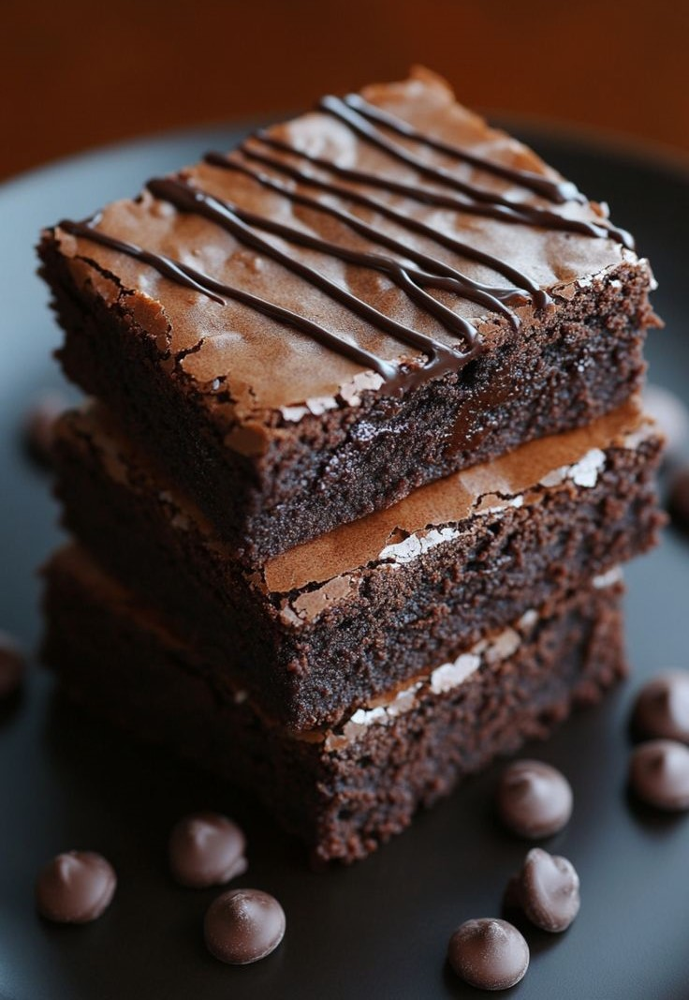

Amantes de Vitualhas
Brownie de chocolate
Gostaria de comer uma sobremesa feita com poucos ingredientes e fica uma delícia? Hoje trago uma receita de brownie que é prático, feito com ingredientes básicos como manteiga, ovos, achocolatado, açúcar e farinha de trigo, que costumam ser bem acessíveis. Perfeita para aqueles momentos em que se deseja algo doce e caseiro sem demorar muito na cozinha, sendo a duração do seu preparo de aproximadamente 30 minutos.Pré-aqueça o forno, reúna os ingredientes e em pouco tempo estará apreciando a maravilha do chocolate recém-assado. Siga estas instruções passo a passo e desfrute de um brownie simples, rápido, fresco e irresistível em pouquíssimo tempo!
Ingredientes
- 5 colheres de manteiga
- 3 xícaras de achocolatado
- 12 colheres de farinha de trigo
- 3 ovos
- 6 colheres de açúcar
Modo de preparo:
Derreta a manteiga e reserve. Enquanto derrete a manteiga, misture os 3 ovos e o açúcar e misture bem. Acrescente a manteiga derretida no ovo e o açúcar. Após isso, é so misturar o achocolatado e o trigo. Não se esqueça de untar a forma com manteiga e achocolatado para em seguida despejar a massa. Leve ao forno a 180° C por 30 minutos e ao terminar de assar, bom apetite!(Recomendo esperar esfriar para não queimar a boca).
Link da receita originalOmelete rápido

Está com pouco tempo para preparar um café da manhã nutritivo e saboroso? Aqui nós temos a solução do seu problema, que se chama "omelete". É uma receita que dura 4 minutos,fácil de fazer e com poucos ingredientes, que te trará a energia e nutrientes necessários para começar bem o dia. Ele não exige profissionalismo em seu preparo, necessitando apenas de bater os ingredientes, adicionar os ingredientes e temperá-los a seu gosto. Apesar de parecer simples, é uma maravílha para os apressados e famintos, que não perderiam uma oportunidade dessas por nada. Não perca tempo e siga essa receita para comer algo que você não se arrependerá!
Ingredientes
- 2 ovos
- 1 pitada de sal
- 1 fatia de presunto
- Tempero verde a gosto
- Caldo de galinha a gosto
- 2 fatias de queijo
Modo de preparo:
Bata os 2 ovos, pode ser na batedeira ou não. Após ter batido bem, coloque-o na frigideira já untada com óleo, acrescente o sal, o presunto picado em quadradinhos e as duas fatias de queijo (não precisa picar o queijo). Em seguida, adicione os temperos a gosto, espere ficar firme, e vire o omelete. Está pronto um omelete delicioso, bom apetite!
Link da receita original